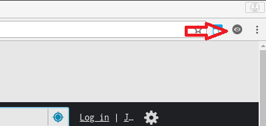
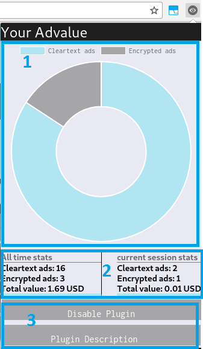
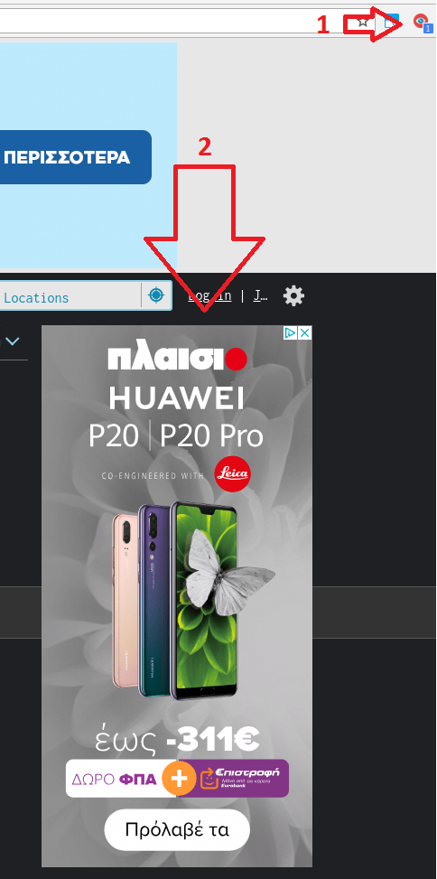

You can install the plugin in your browser by downloading the code from our github repository ( link to repository) or by downloading it from the Chrome web Store link to the store. Please before install the plugin read the YourAdValue EULA and be sure you understand and accept the terms and conditions.
2. Open Extension Popup Window
After you install the extension to your browser successfully an icon will appear in the upper right corner of your browser (Figure 1). You can access the plugin by clicking this icon.
As you navigate through websites the icon will change color and turn into red. When the icon turns red a number will appear next to it. This is the number of the advertisements caught by the YourAdValue that participate to Real Time Bidding (RTB) (Figure 3).

Figure 1. Icon after plugin installation
3. Extension Statistics Description
When clicking the plugin icon a popup window appears. The popup window is seperated in three subsection. The 1) pie chart scetion, the 2) statistics and the 3) options section.
1) The pie chart displays the statistics about the number of advertisements caught during the lifetime of the plugin in a user friendly fashion. Advertisements are divided in two categories: the encrypted and the plaintext. Encrypted are the ads that their value is in encrypted format, and plaitext is the ads that their value is unencrypted.
2) The statistics session displays the statistics about the ads. This section is divided in two subsections as well 'all time stats' and 'current session stats'.
In the 'all time stats' sections statistics about advertisements through all the lifetime of the plugin are displayed. This statistics include the number of encrypted advertisements, the number of the cleartext advertisements and the total value of the advertisements you have seen in USD.
In the 'current session stats' are displayed the same statistics but only for the period you open your browser until you close it again.
3) In the options section you are given the choice to disable the plugin and to see the description page(this page). If you disable the plugin your choice is valid only until you close your browser.

Figure 2. Plugin UI
4. Advertisements Detection
The extension is able to detect when a Real Time Bidding advertisement is displayed as you browse through websites and provide information about these ads in real time. In the following screenshot you can see the plugin in action.
Point number 1: When a page is rendered in the user's browser the plugin will change color if RTB ads are caught. Next to the plugin icon there is a number annotating how many RTB ads are succefully caught by YourAdValue Extension.
Point number 2: This is an example of a Real Time Bidding Advertisement caught by YourAdValue extension.

Figure 3. The plugin in action.